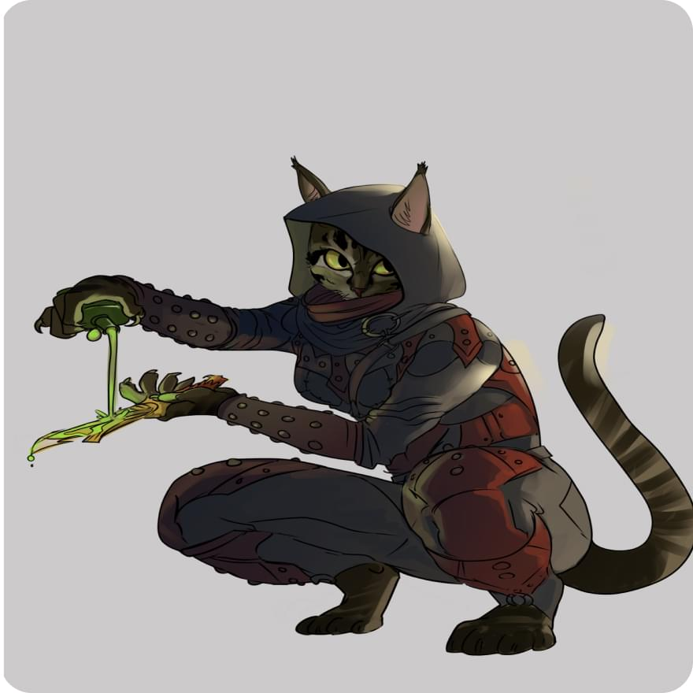

Имя: Дима

Характеристики:
Сила -1
Ловкость +3
Телосложение -1
Интеллект 0
Мудрость 0
Харизма +1
Акробатика +2
Атлетика -2
Внимательность 0
Выживыние -1
Выступление +1
Запугивание +1
История 0
Ловкость рук +2
Магия 0
Медицина 0
Обман +1
Природа 0
Проницательность 0
Религия 0
Скрытность +1
Убеждение +1
Уход за животными 0
Анализ 0
Характер:
- Ваш персонаж обладает проницательным умом, что позволяет ему быстро анализировать ситуации и находить выход из сложных ситуаций.
- Вы склонны к самоуверенности и иногда проявляете некоторую высокомерность, что может вызывать неприязнь у некоторых людей.
- Ваш персонаж обладает яркими и чуткими чувствами, позволяющими ему наслаждаться малыми радостями жизни и проникаться красотой окружающего мира.
- Вы проявляете склонность к независимости и свободолюбию, предпочитая самостоятельно принимать решения и не привязываться к кому-либо или чему-либо.
- Ваш персонаж обладает уникальным чувством юмора, способен поднимать настроение окружающим и находить радость в жизни даже в трудных моментах.
Каджит - убийца
Каджиты - это раса котоподобных существ, обладающих своей уникальной внешностью. Их внешний вид может значительно варьироваться, и каждый каджит имеет свои индивидуальные особенности, но существуют некоторые общие черты, характерные для этой расы.
Каджиты имеют гибкое и стройное телосложение, напоминающее кошачье. У них тонкая и грациозная фигура, позволяющая им быть ловкими и быстрыми. Их конечности оканчиваются острыми и резкими когтями, которые могут быть использованы в бою.
Лицо каджитов обладает заметными котовыми чертами. У них широкие зрачки, часто окрашенные в яркие цвета, и удлиненные уши, которые могут двигаться независимо друг от друга, помогая им лучше воспринимать звуки. Ушные раковины украшены кольцами и другими украшениями, что является одним из признаков их культуры.
Волосы каджитов тоже разнообразны и могут быть короткими или длинными, густыми и пушистыми, как у разных пород кошек. Окрас волос у каджитов может варьироваться от черного и коричневого до оттенков серого и песочного.
Кожа у каджитов может быть разной оттеночности, от бледного до темного, и часто имеет шероховатую текстуру, напоминающую шкуру кошки.
История:
На землях Эльсвейра, там, где пески теряются в далеких горизонтах и мистический ветер веет с запада, процветает древняя раса каджитов. Котоподобные существа, выдающиеся своим грациозным обликом и изысканным характером.
Изначально народ каджитов жил в маленьких племенах, странствуя по пустынным равнинам и древним руинам, прислушиваясь к зову своих предков. Они обладали искусством торговли и мастерством военного искусства, что делало их ценными союзниками и опасными противниками.
Однако, их история неразрывно связана с вековыми конфликтами и интригами, которые грозили разделить их на отдельные фракции. Битвы за власть и территорию грозили разрушить славу и силу каджитов. Но в самый темный период их истории, каджиты объединились под влиянием харизматичного лидера и обрели новую надежду.
Под руководством нового правителя, который прославился своим мудрым правлением и умением примирять враждующие стороны, Эльсвейр процветал. Каджиты создали богатую культуру искусства, музыки и торговли, привлекая к себе внимание окружающих земель.
Однако, тени прошлого не исчезли полностью. Враждебные силы всегда таились в тени, готовые попытаться разрушить мир и поругать славу каджитов. Но народ Эльсвейра никогда не забывал своих корней и оставался единим в сердце, готовым защитить свою родину.
Так продолжается их история - история гордых и грациозных каджитов, которые продолжают покорять мир своими талантами, торговлей и мудростью. Эльсвейр - земля, где магия и древние тайны соединяются с мастерством и обаянием каджитов, создавая неповторимую легенду, живущую в сердцах и уме этого великого народа.
Однако недавно Каджитам выпало столкнуться с новым испытанием. Война была объявлена Корвусам, другой расе, с которой Каджиты ранее поддерживали мирные отношения. Это вызвало раздор и борьбу между двумя расами, превращая их прежнюю дружбу в ожесточенное противостояние.
Моя личная цель:
Вы очень любите свою сестру и желаете защитить ее и помочь ей сбежать в другое место
Отношения:
У тебя есть сестра каджит, она сейчас с тобой в группе
Инвентарь:
Пояс с кунаями (9 шт), воровской набор инструментов, платок для скрытия лица, флакон с горючим маслом, мешочек с мелкими камушками, 1 зелье лечения (кость хита * 1)
Способности:
Стальные когти
Ваши руки превращаются в острые когти, позволяющие вам атаковать врагов смертельными и точными ударами ближнего боя.
Глаза кошки (пассивная способность)
Вы способны видеть в темноте
Мастер ухода
Ваши навыки ловкости безупречны. Вы обладаете способностью быстро отступить от опасности и уклониться от предсмертной атаки противника, сохраняя свою жизнь.
Бросок метательного клинка
Вы виртуозно метаете кунаи, это позволяет вам атаковать врагов на расстоянии, используется вместо основной атаки. урон (1к6) + 4 меткость
Выброс
Вы способны неожиданно выбросить кунай с близкого расстояния после совершения основной атаки. Урон (1к6) проверка на меткость не требуется. Нельзя использовать после того, как противники заметили “Выброс”.
Неожиданный пинок
После основной атаки из скрытности вы способны пнуть и отбросить врага стоящего рядом, нанеся урон (1к4)
Я - тень
Вы способны скрыться в тени союзного персонажа. Нельзя использовать во время боя
Слабое место (пассивная способность)
Вы игнорируете класс брони противника, вместо этого бросьте кубик д20, результат больший или равный 11 будет попаданием
Инициатива
+3
Кость хитов
1к8
Экипировка:
Оружие (Кинжалы, метательные топоры и ножи, одноручный топор, одноручный арбалет):
Кинжалы
Острые кинжалы (2к4) + 3
Меткость: +4
Доспехи (легкие):
Кожанный доспех
+2 к защите
Кожанные ботинки
+1 к защите
Кожанные браслеты
+1 к защите
Жизни:
15
Класс брони:
14
Языки:
Общий, Каджитский